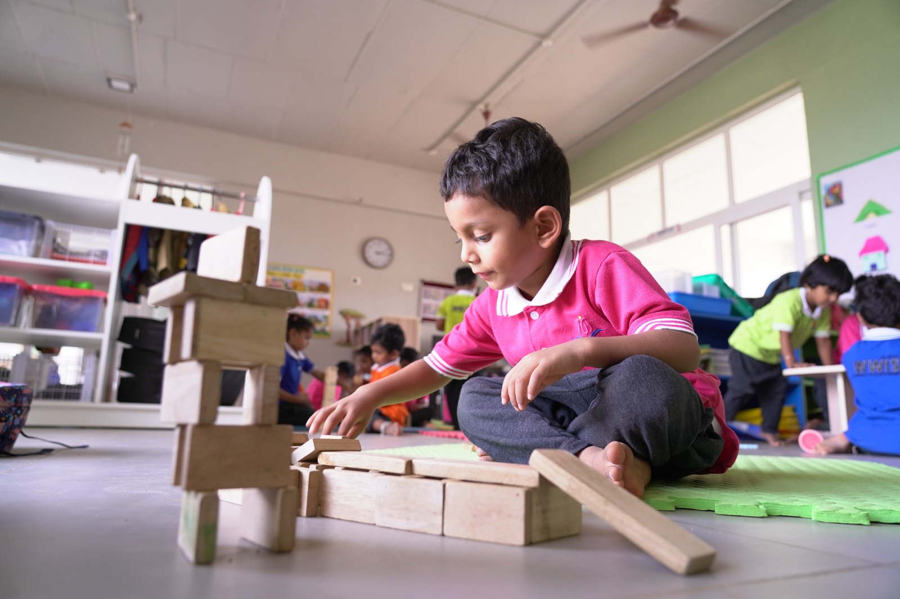
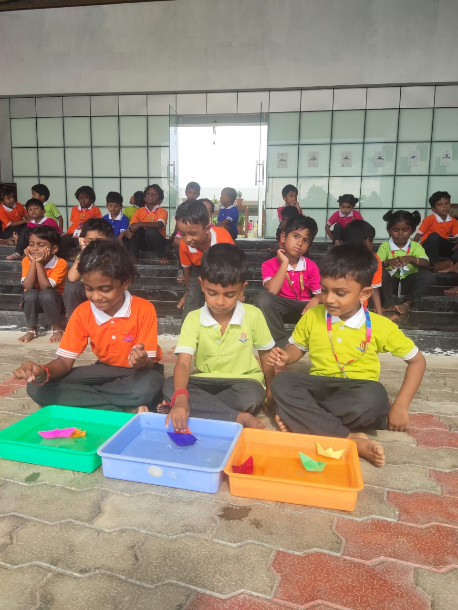
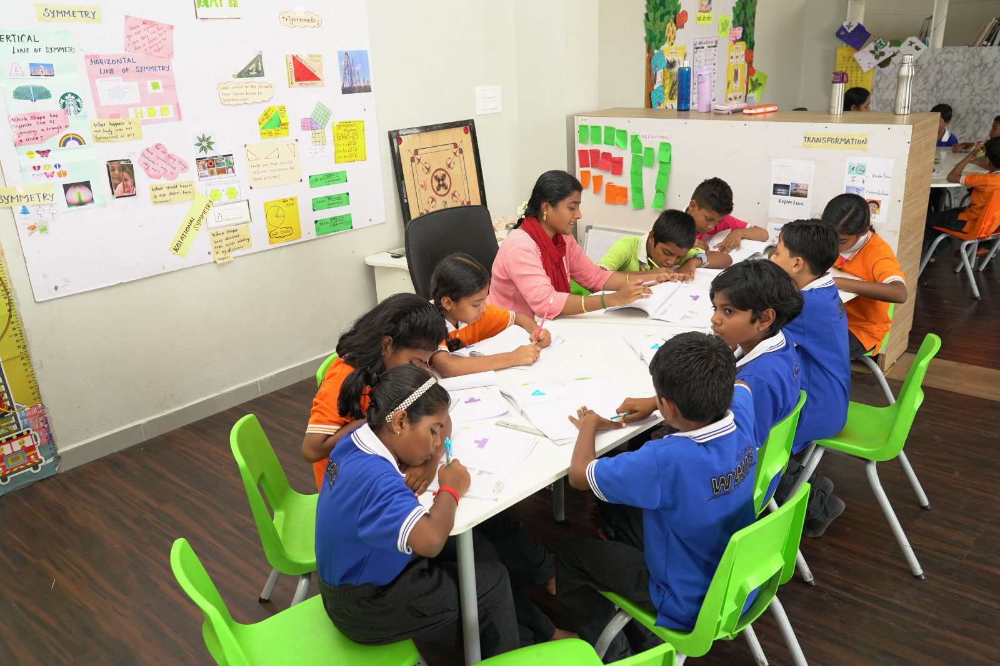
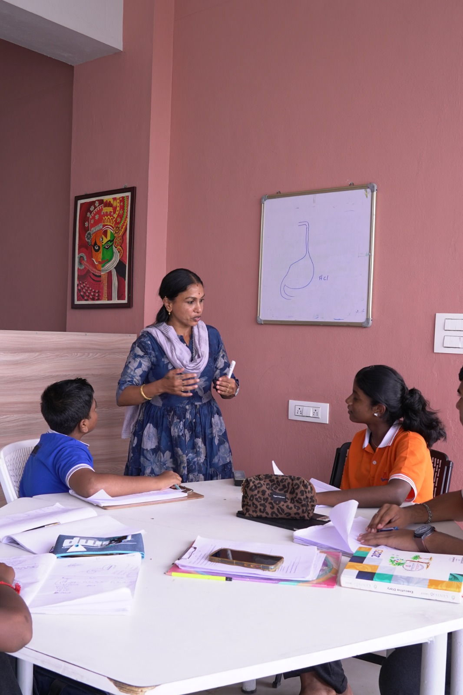
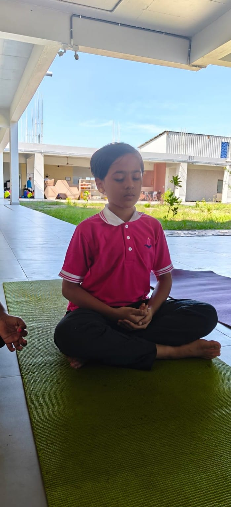
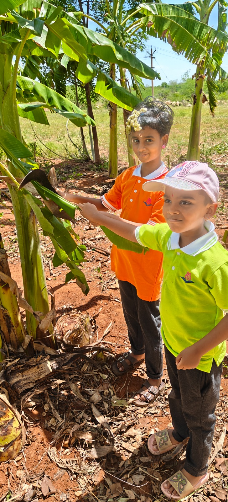
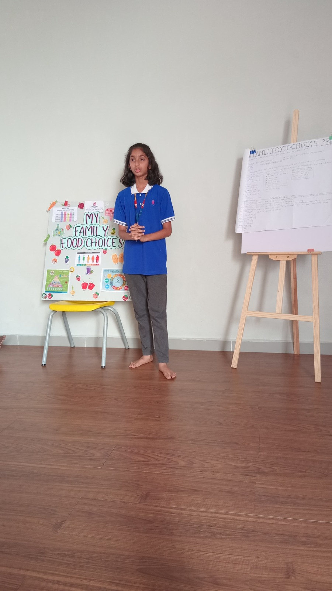
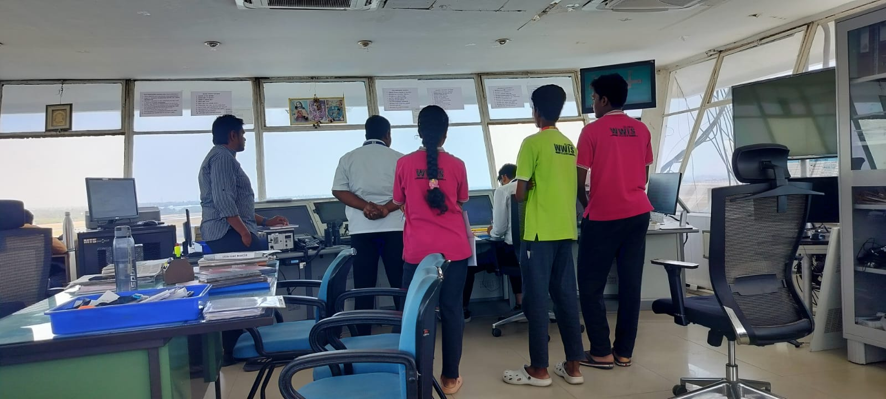

The ILP recognizes each child's unique strengths through personalized guidance and support — celebrating their uniqueness, setting and monitoring goals, and giving every student a dedicated learning plan reviewed regularly by our coordinators. It runs through eight connected pillars, from independent exploration to career planning.

Children engage in activities autonomously within an exploratory environment. This builds two critical abilities: lifelong curiosity through natural self-direction, and creative problem-solving when facing unfamiliar situations.

Creative thinking is treated as a learnable skill, not an innate talent. Regular creative challenges strengthen each child's natural abilities and improve teamwork, productivity and collaborative outcomes.

"Life is an exploration of things — the more exploration we make, the more knowledge we gain." Learning in mathematics and science moves from basic to sophisticated understanding by connecting new concepts to what students already know and observe.

Children acquire language naturally through listening, observation and practice. Language Hour introduces Tamil, Hindi and English through storytelling, circle time, songs, rhymes and discussion — progressing through listening, speaking, reading and writing.

Physical activity measurably improves classroom behavior. Personalized Smart Moves develop motor skills and interpersonal abilities while sharpening memory, concentration and focus for everyday tasks.

Nature and environmental learning support mental health and reduce screen time. Outdoor lessons and nature walks build exploration skills and help children understand their responsibilities to themselves, others and the planet.

Over two weeks, students work on real-world problems or complex questions, producing a public product or presentation for an authentic audience — building deep content knowledge alongside critical thinking, collaboration, creativity and communication.

Guided activities and research help students discover their interests and explore career options early — building awareness of career paths, required skills and opportunities, along with the confidence and clarity to make informed academic decisions.
Alongside iPlay, iDiscover and iLead, every student follows a personalized ILP with specialized tracks built around their interests.
Students explore robotics and automation through hands-on projects — designing a smart dustbin, building robotic cars, and learning basic electronics and coding concepts that build logical thinking and teamwork.
Students explore fashion designing through practical experience — designing and stitching tote bags, pouches and wallets, with senior students tailoring dresses while learning fabric selection and patterns.
In the Maker Space, students design and build useful, creative products by hand — from toys to a shoe rack and a bookshelf — developing practical thinking, planning and innovation skills.
Through creative clay modeling, students shape pots, decorative items and clay models of everyday objects — developing creativity, focus and fine motor skills through artistic expression.
Each child is supported in developing story-writing skills at their own pace — building vocabulary and sentence formation with clear goals and personalised guidance to express their ideas with confidence.
Students interested in culinary arts develop skills relevant to future chefs — preparing nutritious meals and power breakfasts while learning about healthy ingredients, teamwork and kitchen discipline.
Students develop programming skills through hands-on, progressive learning — exploring Scratch for creative coding, practising Python, and working on website creation projects that build logical thinking and problem-solving.
Students are given creative spaces to explore ideas, experiment with colours and bring their imagination to life — creating mural artworks and exploring different painting styles that build creativity and confidence.